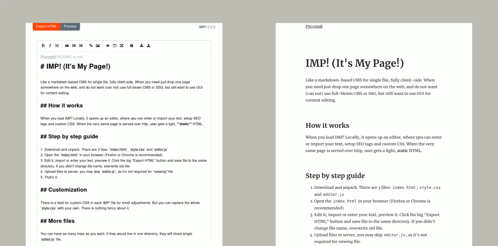

When you load IMP! Locally, it opens up an editor, where you can enter or import your text, setup SEO tags and custom CSS. When the very same page is served over http, user gets a light, static HTML. Page does not require Java Script to be viewed, it's just plain HTML.

Descent browser, Firefox or Chrome preferred (tested). If you've updated your browser within last 4 years, it should be fine.
index.html, style.css and imp.jsindex.html in your browser (Firefox or Chrome is recommended)imp.js, as it's not required for viewing file.